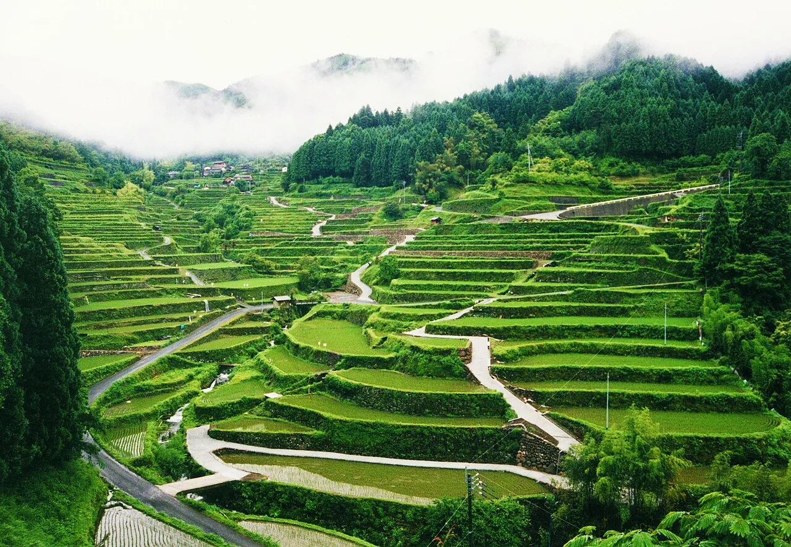

Beyond manhole cards: Japan's other free collectible cards
English-language travel writing knows about two of these: manhole cards and dam cards. What almost none of it mentions is that those two are members of a much larger family. Japanese collectors call the whole genre 公共配布カード (kōkyō haifu kādo) — "publicly distributed cards" — free collectible cards issued by ministries, prefectures, municipalities and public bodies, handed over in person to people who show up. There are cards for rice terraces, historic townscapes, observatories, ropeways, ports, waterfalls, erosion-control dams, industrial night views, deep-space antennas and coal-mining heritage. This guide covers the series a visitor can realistically collect, the ones with unusual conditions attached, and the ones that have quietly shut down.

How big the genre actually is
Nobody knows, and that is not a figure of speech. There is no central registry: each series is run by whichever ministry, agency, prefecture, industry association or non-profit decided to start one. The closest thing to a catalogue is the collector community. The site Cardhunter maps series nationwide; mlit.net maintains a links page pointing at the official sites of 37 different card series.
To give a sense of scale, here are counts from Cardhunter's nationwide list as displayed in July 2026. Treat them as a collectors' snapshot, not an official statistic.
| Series | Types listed | Series | Types listed |
|---|---|---|---|
| Manhole cards | 1,313 | Water-blessing cards | 117 |
| Dam cards | 993 | Ropeway cards | 60 |
| Rice terrace cards | 289 | Famous-water cards | 62 |
| Jidan cards | 233 | Geo cards | 62 |
| LOGet! cards | 193 | BUNCARD | 55 |
| Observatory cards | 45 | JAXA antenna cards | 22 |
And that is only the national series. Regional ones multiply the total again — Hokkaido alone has, among others, coal-iron-port cards, cherry-blossom cards, wetland cards, power-station cards, fishing-port cards, Jōmon cards and scenic-road cards, plus a long list of series that have already finished. The genre has no English name because, as far as we can tell, nobody has previously written it up in English as a genre at all.
Start with our manhole card guide — as of Lot 29, distributed from 31 July 2026, the cumulative total is 1,311 card types from 783 municipalities and 4 organisations. Everything below is what comes after you've caught that bug.
The easiest series for a visitor
These are the ones where the distribution point is somewhere you might already be going, and where the only requirement is turning up and asking.
Rice terrace cards (棚田カード)
Issued by the Ministry of Agriculture, Forestry and Fisheries, launched in July 2019 with 56 districts across 31 prefectures. Six waves later the programme covers a cumulative 286 districts in 37 prefectures; the sixth wave added 27 districts on 22 April 2026. The front carries a seasonal photograph of the terraces; the back gives the number of paddies, the slope, the rice varieties grown and the site's history.
MAFF states explicitly that cards are not posted to people who have not visited the terraces, and resale is prohibited. Two accessible pickup points: the Chikuma City Japan Heritage Centre in Nagano, for the Obasute terraces — walkable from JR Obasute station on the Shinonoi line, one card per visitor — and the Michi-no-Eki Kumano Itaya Kurobei no Sato in Mie, for the Maruyama Senmaida terraces.
Historic townscape cards (歴まちカード)
Run by MLIT's regional bureaus together with cities certified under Japan's historic-townscape legislation, starting with the Chūbu region in October 2017. As of March 2023 there were 72 cities with 72 card types; as of March 2026 there are 100 certified cities nationwide, so the catalogue is still filling in. The cards are business-card sized at 6.3 × 8.8 cm, with a landscape photo on the front and information about the city's historic fabric on the back.
This is the series that overlaps best with an ordinary sightseeing itinerary, because certified historic districts are places visitors already go. Kyoto distributes at Hito-Machi Kōryūkan Kyoto (basement level) and at the Saga Toriimoto Townscape Preservation Hall in the Arashiyama area. Kawagoe, Kamakura, Takayama and Inuyama also participate.
Ropeway cards (ロープウェイカード)
There is no single national issuer — the Hokkaido Ropeway Association covers 18 facilities in Hokkaido from May 2018, operators in the Chūbu region began around 2017, and the Japan Cableway Association publishes a nationwide list of distribution points. Cardhunter lists about 60 types. You ask when buying a return ticket, and receive one card per person, free, while stocks last.
For visitors this is close to free money, because you were going to ride the ropeway anyway. Participating lines include Hakone Komagatake, Mount Tsukuba, Mount Hakodate, Mount Moiwa in Sapporo, Atami, Eizan in Kyoto and Hachimanyama in Ōmi-Hachiman. Note that some are seasonal and some points have stopped.
Observatory cards (天文台カード)
A voluntary scheme among member facilities of the Japan Public Observatory Society, with the information hub run by Kitasubaru, the Nayoro City Observatory. Around 46 facilities currently distribute. These have the most enjoyably nerdish design of any series: the card carries a region code and a facility-type code on the front (O for observatory, P for planetarium, M for museum, N for nature park, H for lodging), and on the back a code for the telescope's optical system — R for refractor, C for Cassegrain reflector, N for Newtonian — plus its mount type, or for planetariums the projector manufacturer.
Reachable examples: Sapporo City Observatory in Nakajima Park, effectively at Nakajima-Kōen subway station; Kyoto Sangyo University's Kōyama Observatory; and Hoshi no Ko Kan in Himeji. The National Astronomical Observatory at Mitaka in Tokyo has stopped distributing.
Cards with strings attached
Several series will not simply hand you a card. These conditions are the part that trips people up, and they are essentially undocumented in English.
| Series | What you have to do |
|---|---|
| Factory night view cards全国工場夜景カード | Varies by city. Amagasaki requires you to show a photo of the city's factory night view that you took yourself, or proof of attending a factory-night-view event. Fuji City also requires your own photo, plus a short survey. Takaishi asks only for a survey response, no photo. |
| Sabo cards砂防カード / SABOカード | Usually just visiting the erosion-control office. But the Tokyo Metropolitan Government version requires a photo showing you attended a disaster-preparedness drill in Tokyo — and issues even-numbered cards for events held April–September and odd-numbered ones for October–March, one card per event. |
| Coal-Iron-Port cards炭鉄港カード | Typically a purchase of ¥500 or more at the distributing facility, or paid admission. One Ebetsu shop sets the bar at ¥800. The sixth wave — 13 new hologram cards — runs 27 June 2026 to 28 February 2027 while stocks last. |
| JAXA antenna cardsアンテナカード | Tour the facility and complete a questionnaire. Some sites only distribute during annual open days — at Tsukuba Space Center the antenna cards are event-only. |
The photo requirements are worth pausing on. Amagasaki and Fuji are not checking that you bought something; they are checking that you personally stood in front of an industrial complex at night and photographed it. The card is a receipt for an experience — which is the same logic as the manhole card's in-person-only rule, taken one step further.
For the specialists
| Series | Issued by | Notes |
|---|---|---|
| Sabo cards砂防カード | MLIT erosion-control offices, Hokkaido Development Bureau, several prefectures | Began 2016 with four cards including the Shiraiwa check dam in Toyama. Over 140 locations as of 2021; the current national total is not published. The back gives the structure's dimensions and the engineering used to build it. |
| Port cards港カード | Prefectural port divisions — Niigata, Yamagata, Ōita and others | Niigata was first, around 2016; Ōita's Beppu Port version launched 23 March 2017 and the prefecture called it the second such scheme in Japan and the first in Kyushu. Front is an aerial photo, back gives the port code, the area map and port statistics. Beppu's is obtainable at the ferry terminal counters, which makes it the most visitor-friendly. |
| Famous-water cards名水百選カード | Ministry of the Environment template, printed and distributed by each municipality | Created in FY2015 for the 30th anniversary of the Hundred Famous Waters selection. Up to 200 sites are eligible across the original and Heisei lists, but only some have cards — Cardhunter lists 62, and several are out of stock or discontinued. Accessible sites include the Otaka-no-Michi and Masugata Pond springs in Kokubunji, Tokyo, and the Suizenji-Ezuko springs in Kumamoto. |
| Water-blessing cards水の恵みカード | MAFF regional agriculture bureaus; also the Japan Water Agency | Over 100 types covering agricultural water infrastructure — dams, pumping stations, irrigation canals — paired with local produce. The catch for visitors is distribution: mostly farm stands and harvest festivals rather than a permanent counter. |
| Coal-Iron-Port cards炭鉄港カード | Tantetsukō Promotion Council | Tied to a Japan Heritage designation covering 13 Hokkaido municipalities. 77 types across waves one to five. Otaru's tourist plaza by the canal is the easiest pickup. |
The digital outlier: lighthouse cards
The Japan Coast Guard runs a lighthouse card scheme (灯台カード) that breaks the format. There is no physical card. The Coast Guard provides the cards as electronic image files — L-size PNGs — downloaded from a dedicated page reached by scanning a QR code displayed on the lighthouse gate.
That makes it the one series in this guide where nothing runs out, no counter closes at 17:00, and no staff member has to be present. It also means the collection lives on your phone rather than in a wallet, which some collectors consider heresy. We have not been able to confirm the programme's start date or its total number of cards from the official page, so we are not quoting either.
Series that have ended — do not plan around these
Remote island cards (離島カード) — issued by the Cabinet Office from 25 March 2021 covering 66 designated inhabited border islands. The programme as a whole ended on 31 March 2024. Only five municipalities have continued distributing on their own: Okinoshima and Chibu in Shimane, Hagi (Mishima) in Yamaguchi, Iki in Nagasaki, and Minamitane (Tanegashima) in Kagoshima. Iki, about an hour by jetfoil from Hakata, is the realistic one.
Cultural heritage cards (文化遺産カード / herica) — run by an NPO from FY2010, 211 types, with the memorable condition that you had to show a photo of the heritage site that you had taken. The project ended on 31 August 2024, with facilities distributing only until their stock ran out.
This is the genre's real hazard. Series are launched by individual agencies on project budgets, and they end the same way, usually without a press release in any language. Several famous-water cards and early factory night view waves are likewise finished. Always check the official page for the specific card before building a day around it.
The unwritten rules
- In person, always. Effectively every series refuses postal delivery and proxy collection. The point of the card is to move you to the place.
- One per person. The standard limit across series.
- Free — but not always unconditional. The card costs nothing; a purchase, a survey or a photograph may still be required.
- Opening hours are office hours. Many distribution points are municipal offices closed at weekends and over the new year.
- Don't resell. MAFF states this explicitly for rice terrace cards, and the norm holds across the genre.
- Stock runs out. Print runs are finite — factory night view cards were produced in runs of 2,000 per type.
Some links above are affiliate links. We may earn a commission at no extra cost to you. We only list services we'd use ourselves.
The Japanese you'll actually use
| Japanese | Reading | Meaning |
|---|---|---|
| 公共配布カード | kōkyō haifu kādo | publicly distributed card — the name of the whole genre |
| 配布場所 | haifu basho | distribution point — the phrase to look for on an official page |
| 配布終了 | haifu shūryō | distribution ended — the phrase that ruins a plan |
| 在庫がなくなり次第 | zaiko ga naku nari shidai | while stocks last |
| お一人様一枚 | o-hitorisama ichimai | one card per person |
| 郵送不可 | yūsō fuka | no postal delivery |
| 先着順 | senchakujun | first come, first served |
| カードをください | kādo o kudasai | "a card, please" — what you say at the counter |
| 棚田 | tanada | terraced rice fields |
| 砂防 | sabō | erosion and sediment control |
Want these to stick? The free JLPT battle quiz drills travel and culture vocabulary like this with spaced repetition.
Cards are one branch. The others: manhole cards →, station stamps →, the michi-no-eki stamp rally →, goshuin temple and shrine seals →, the 100 Famous Castles stamps → and Pokéfuta →.
Common questions
Q. What are Japan's "public distribution cards"?
A. 公共配布カード (kōkyō haifu kādo) is the collectors' term for free collectible cards issued by Japanese ministries, agencies, prefectures, municipalities and public bodies. Manhole cards and dam cards are the two best-known, but there are dozens of series covering rice terraces, historic towns, observatories, ropeways, ports, springs, erosion-control dams and more.
Q. How many card series are there in total?
A. There is no official count, because each series is run independently by whichever body created it. The collectors' site mlit.net links to the official pages of 37 different series, and Cardhunter maps many more including region-specific ones.
Q. Are they really free?
A. The cards themselves cost nothing, but some series attach conditions. Coal-Iron-Port cards generally require a purchase of ¥500 or more at the distributing facility, some factory night view cities require a photo you took yourself, and JAXA's antenna cards require completing a questionnaire after a facility tour.
Q. Can I get any of them by post?
A. No. In-person collection is the near-universal rule and the reason the schemes exist — MAFF states plainly that rice terrace cards are not posted to people who have not visited the terraces. The one exception in spirit is the Japan Coast Guard's lighthouse cards, which are digital images downloaded via a QR code at the lighthouse.
Q. Which series is easiest for a foreign visitor?
A. Ropeway cards, because you ask when buying a return ticket for a ropeway you were riding anyway. Historic townscape cards are next, since certified historic districts such as Kyoto's Saga Toriimoto, Kawagoe, Kamakura and Takayama are places visitors already go.
Q. Are remote island cards still available?
A. Not as a programme. The Cabinet Office scheme ran from 25 March 2021 and ended on 31 March 2024. Five municipalities continue on their own: Okinoshima and Chibu in Shimane, Hagi (Mishima) in Yamaguchi, Iki in Nagasaki, and Minamitane in Kagoshima.
Q. What about cultural heritage cards (herica)?
A. That project ended on 31 August 2024. Facilities distributed remaining stock until it ran out, so plan on it being unavailable.
Q. How do I check whether a specific card is still being given out?
A. Check the issuing body's own page rather than a blog, because series end without announcement in English. The collector sites Cardhunter and mlit.net are the fastest way to find which official page to check.